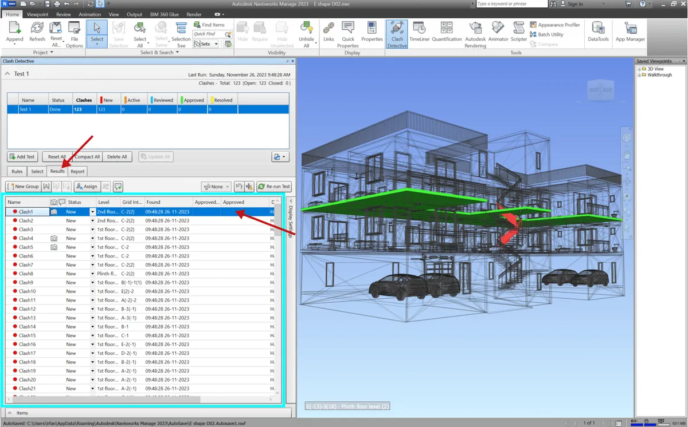
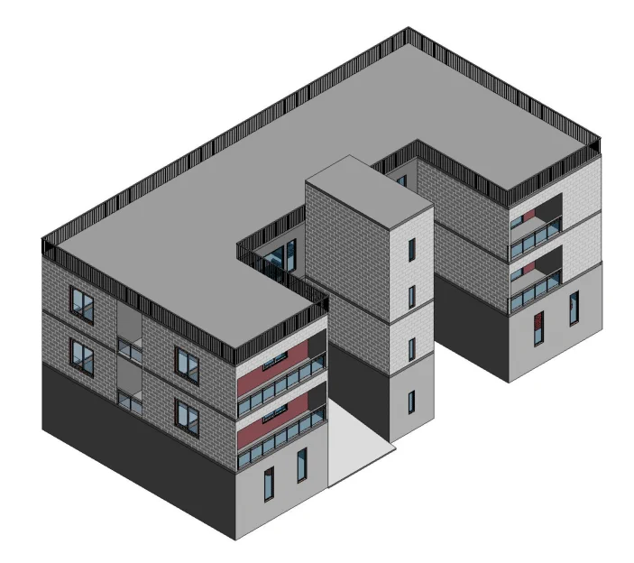

Clash Detection and Model Coordination
Autodesk Navisworks
Overview
Architectural, structural and MEP models federated in Autodesk Navisworks and run through Clash Detective. The test surfaced 123 clashes. Each one is pinned to a level and grid intersection, so it can be assigned to a trade and closed before it becomes rework on site.
Clash Detective


Coordinated Building
